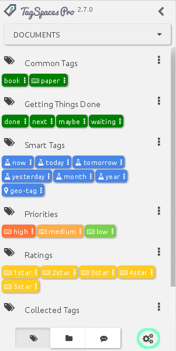
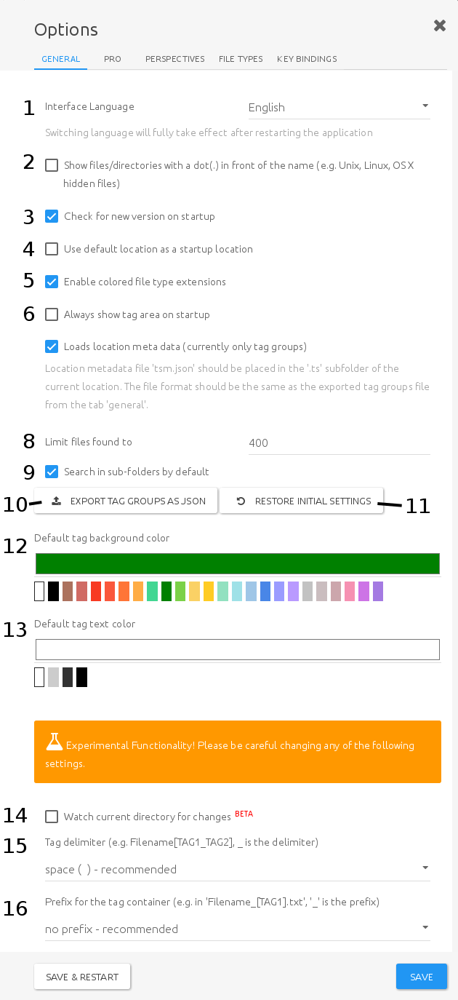
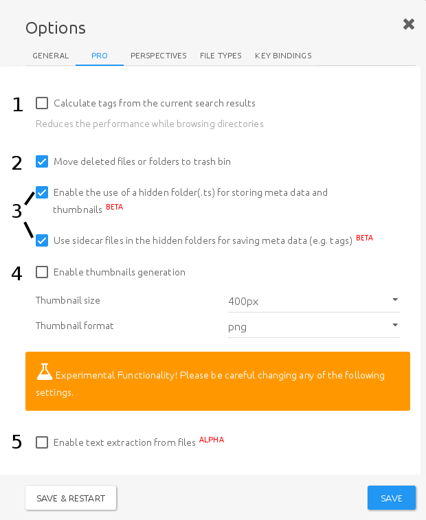
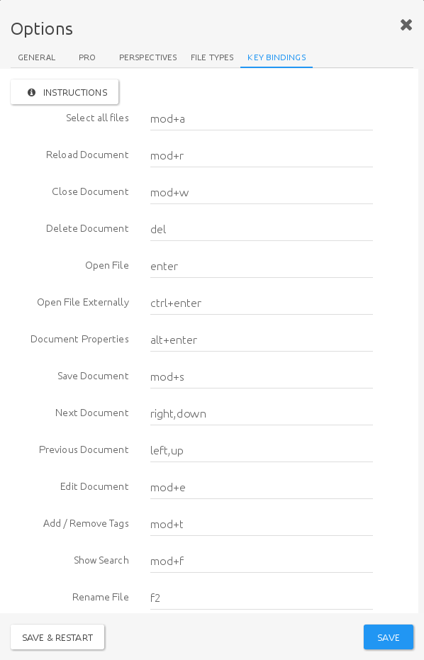
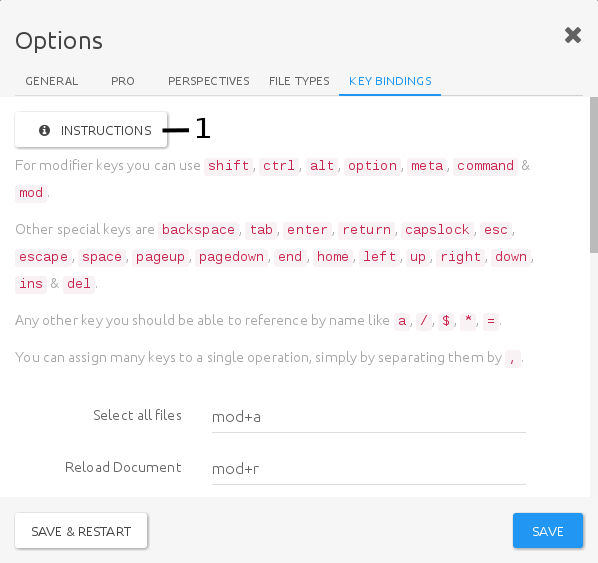

Settings
To access the settings dialogue, just click on the gears icon at the bottom of the left side panel

The dialogue has five tabs, which will be described in order:
General
Most of the TagSpaces' common settings can be accessed from this tab.

- Interface language (1) - TagSpaces has been translated to a variety languages. Choose your preference here
- Show files/directories with a dot(.) in front of the name (2) - This will allow the browsing of hidden files in UNIX-like systems (Linux, OSX, BSD, etc.)
- Check for new version on startup (3) - You will be notified if a new version if available
- Use default location as a startup location (4) - TagSpaces will not remember your last active directory, but will always launch showing the specified location instead.
- Enable colored file type extensions (5) - Colour coded extension icons allow for easier navigation
- Always show tag area on startup (6) - Even if you close TagSpaces with the directory browser active, io the next startup the tag library will be shown.
- Loads location meta data (7) - reads meta from
tsm.json, located in a .ts subfolder, if present - Limit files found to (8) - This will limit the maximum amount of search results, possibly resulting in faster search
- Search in sub-folders by default (9) - With this enabled, any subfolders of the current location will be searched as well. When disabled, only the current directory will be included in the search
- Export tag groups as json (10) - Will create a JSON file with the current tag groups
- Restore initial settings (11) - Reset to defaults any time
- Default tag background color (12) - Allows you to change to default background of any newly created tags. Existing tags will not be affected.
- Default tag text color (13)- Allows you to change to default text colour of any newly created tags. Existing tags will not be affected.
The following feature are still considered experimental, change them at your own risk:
- Watch current directory for changes (14) - Will update directory data as and when files change
- Tag delimiter (15) - By default, TagSpaces used a
spaceto mark tag boundaries (learn more here). Here you can change this to another character. - Prefix for the tag container (16) - By default, TagSpaces does not use a prefix to show that the next part of the filename contains tags (learn more here). here you can change that behaviour.
proPro features
This tab is only available in TagSpaces PRO, allowing users to control PRO specific features.

The available options are:
- Calculate tags from the current search results (1) - Once activated, TS will extracting all the tags from the current folder and puts them in a separate tag group. (This option can considerably slow down folder navigation, when there are a lot of files and/or tags present.)
- Move deleted files or folders to trash bin (2) - will allow you to recover deleted files later
- Enable the use of a hidden folder(.ts) for storing meta data and thumbnails and Use sidecar files in the hidden folders for saving meta data (e.g. tags) (3) - When used together, these two options will allow the users to store metadata like tags, separately from files themseélves. Useful, when filenames cannot be changed.
- Enable thumbnails generation (4) - will generate and store persistent thumbnails of image and file previews with the set parameters, allowing for faster navigation in any perspective that might use hem (e.g. Grid Perspective)
The following feature is still considered experimental, change it at your own risk:
- Enable text extraction from files will enable deep search functionality, to find keywords in file contents. This option can considerably slow down search performance!
Perspectives
Here you can set up which perspectives should be shown in the perspectives dropdown menu of the main UI, and in what order. To add a new perspective to the list, press the Add New Perspective button.
Note: To learn more about Perspectives, refer to the File browsing section

File types
Here you can choose which viewer, and editor to launch for each supported file type.

When you click on a file type's viewer dropdown, you will be offered a list of all installed viewer plugins (1).
Note: To learn more about file previews, refer to the Viewing Files section.
When you click on a file type's editor dropdown, you will be offered a list of all installed editor plugins (2).
Note: To learn more about file previews, refer to the Editing Files section.
To add a formerly unrecognised extension, just use the +Add New File Extension button 3).
Key bindings
Under the key bindings tab, you can view and edit all the available key bindings, excluding those assigned to tags.

Pressing the instructions button (1) will open a short overview of the syntax to write your own key bindings.

Note: To learn more about tag-specific key bindings, refer to the Tagging section.